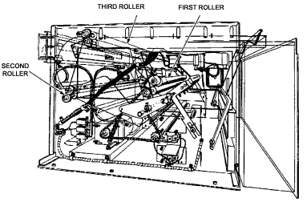
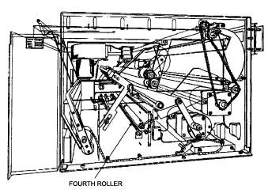

Operating Documentation
Direction 5112972-800, Rev# 2
CT Planned Maintenance Procedures
Operating Documentation |
| Required Persons | Preliminary Reqs | Procedure | Finalization |
|---|---|---|---|
| 1 | Timing Not Applicable | 5 mins | Timing Not Applicable |
Procedure Effectivity:
| Assembly: | MATRIX CAMERA |
| Subassembly: | |
| Purpose: | Clean Metal and Rubber Rollers |
| Last Revised: | July 1995 |
| Item | Qty | Effectivity | Part# | Manufacturer |
|---|---|---|---|---|
| Lint-free Cloth | - | - | - | |
| Isopropyl Alcohol | - | - | - | |
| Water | - | - | - | |
| Mild Liquid Detergent Solution | - | - | - |
Refer to Illustration 1 for the location of the first, second, and third metal roller sets.
Remove the send and receive magazines from the autoloader.
Dampen a section of soft lint-free cloth with water and remove any dust or debris from each roller.
Illustration 1: Location of Metal Rollers

Dry the roller completely with a dry section of cloth. Use isopropyl alcohol to remove grease and other tough stains.
| NOTE: | Be certain to keep the alcohol away from rubber and plastic autoloader components. |
The fourth rubber roller set feeds the exposed film into the receive magazine. Refer to Illustration 2 for the exact location of the fourth rollers.
Remove the send and receive magazines from the autoloader.
Dampen a section of soft lint-free cloth with water and remove any dust or debris from each roller.
Illustration 2: Location of Rubber Rollers

Dry the roller completely with a dry section of cloth. Use a mild liquid detergent solution to remove grease and other tough stains.
No finalization required.